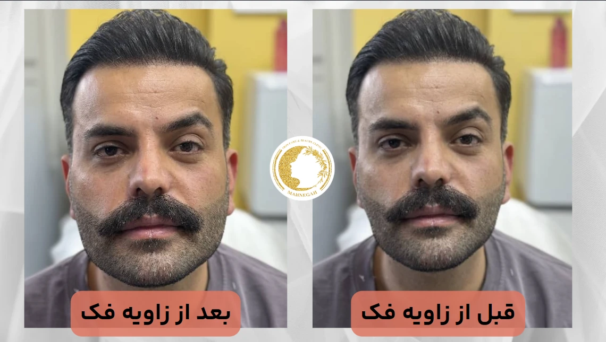
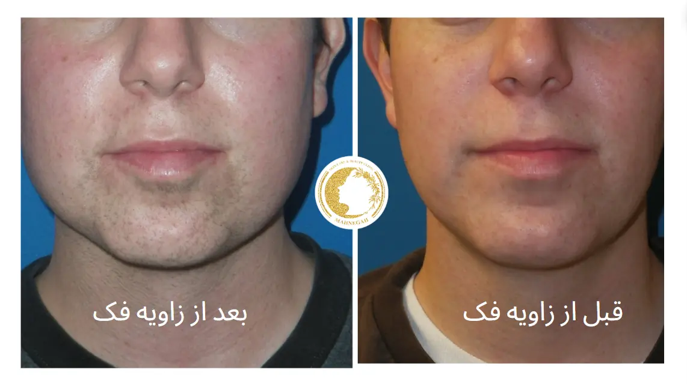
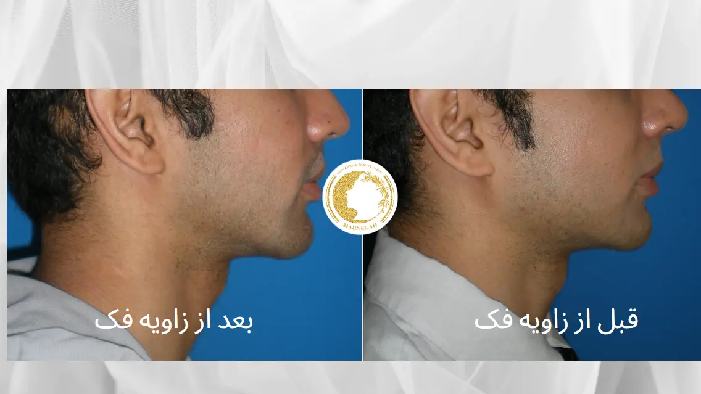
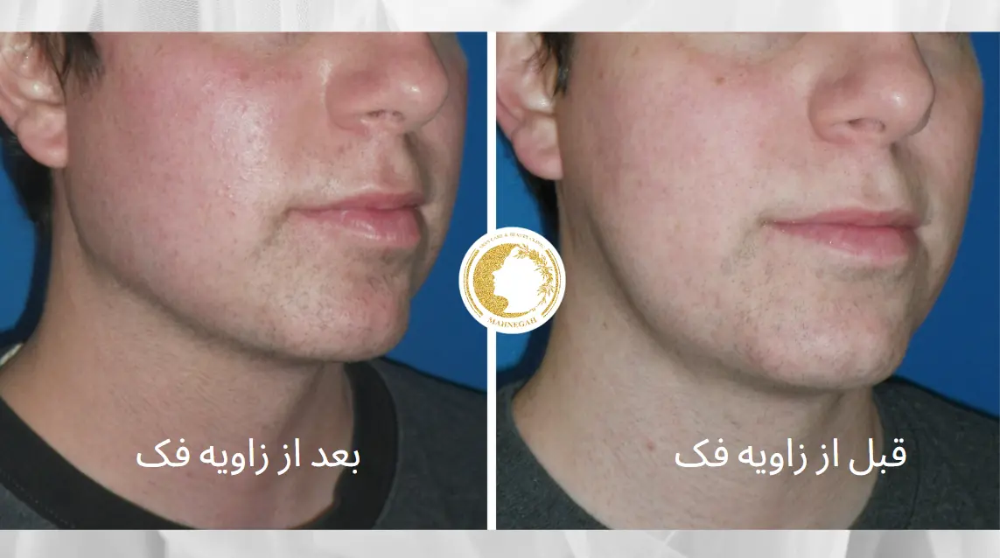
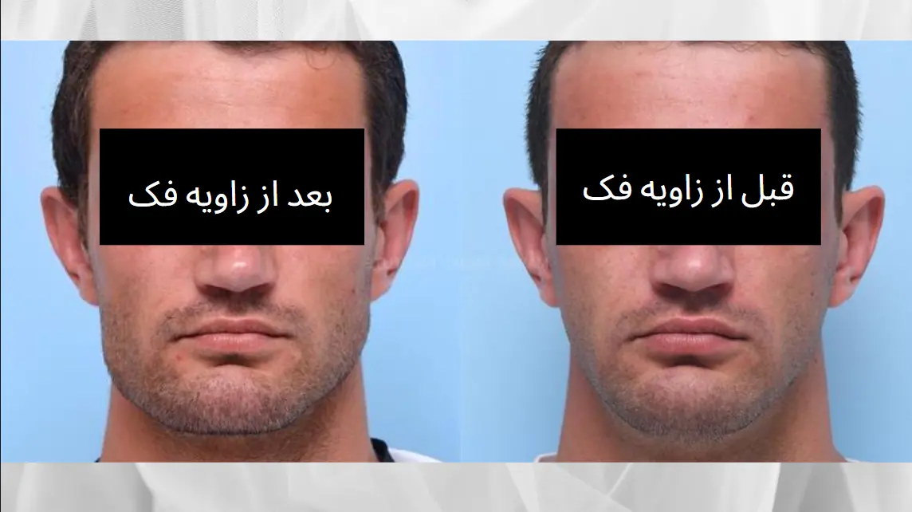
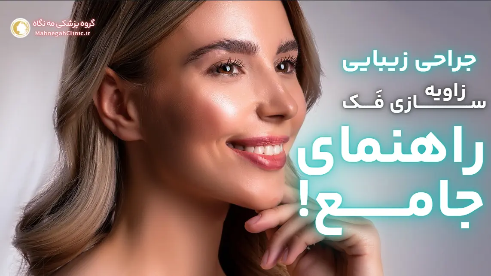
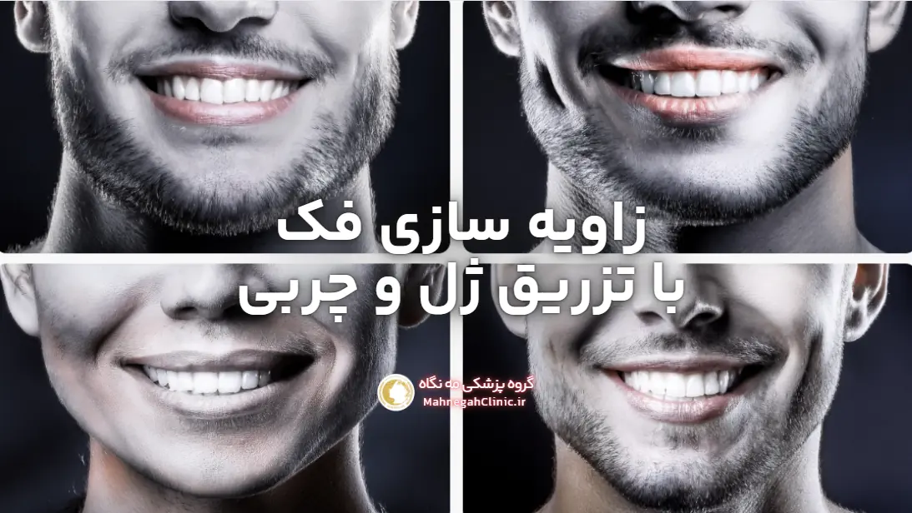

زاویه سازی فک چگونه است + قیمت + روش

زاویه سازی فک چیست؟
زاویه سازی فک یا کانتورینگ فک، یک روش زیبایی است که به بهبود خط فک و ایجاد ظاهری برجستهتر و خوشتراشتر در چهره کمک میکند.
این روش میتواند به صورت غیرجراحی با استفاده از تزریق فیلر یا به صورت جراحی با تغییر شکل استخوان فک انجام شود.
زاویه سازی فک به خصوص برای افرادی که فک ضعیف یا نامتقارن دارند و یا به دنبال بهبود کلی ظاهر صورت خود هستند، مناسب است. این روش میتواند به ایجاد تعادل و هماهنگی بیشتر در چهره، افزایش جذابیت و جوانسازی ظاهر کمک کند. (عمل زاویه فک)

زاویه سازی فک چگونه انجام میشود؟
«زاویه سازی فک» میتواند به دو روش اصلی انجام شود:
-
- روشهای غیرجراحی (عمل زاویه فک) :
-
- تزریق فیلر: این روش محبوب و کمتهاجمی شامل تزریق مواد پرکننده مانند اسید هیالورونیک در نقاط استراتژیک فک است. فیلر باعث افزایش حجم و تعریف خط فک میشود و نتایج آن بلافاصله قابل مشاهده است. این روش معمولاً نیازی به بیحسی ندارد و دوره نقاهت کوتاهی دارد.
-
- تزریق بوتاکس: در برخی موارد، بوتاکس میتواند برای شل کردن عضلات بزرگ فک (ماستر) استفاده شود که باعث میشود فک باریکتر و ظریفتر به نظر برسد. این روش نیز غیرجراحی و کمتهاجمی است و نتایج آن معمولاً پس از چند روز قابل مشاهده است.
-
- روشهای جراحی (عمل زاویه فک) :
-
- جراحی ایمپلنت فک (عمل زاویه فک) : در این روش، ایمپلنتهای جامد از جنس سیلیکون یا مواد دیگر در فک قرار داده میشوند تا حجم و برجستگی آن را افزایش دهند. این روش جراحی نیاز به بیهوشی عمومی دارد و دوره نقاهت آن طولانیتر است.
-
- جراحی استئوتومی فک (عمل زاویه فک) : در این روش، استخوان فک برش داده شده و تغییر شکل داده میشود تا زاویه و برجستگی آن بهبود یابد. این روش جراحی پیچیدهتر است و نیاز به بیهوشی عمومی و دوره نقاهت طولانیتری دارد.
-
- لیپوساکشن: در صورتی که چربی اضافی در ناحیه فک و گردن وجود داشته باشد، لیپوساکشن میتواند به بهبود خط فک و ایجاد ظاهری خوشتراشتر کمک کند.
انتخاب روش مناسب برای زاویه سازی فک به عوامل مختلفی مانند آناتومی صورت، اهداف زیبایی، بودجه و ترجیحات شخصی بستگی دارد. پزشک متخصص با ارزیابی دقیق شرایط شما، بهترین روش را برای دستیابی به نتایج مطلوب پیشنهاد خواهد کرد.
زاویه سازی فک با تزریق ژل: روشی سریع و کمتهاجم برای داشتن صورتی خوشتراش
زاویه سازی فک با تزریق ژل یکی از محبوبترین و کمتهاجمیترین روشهای زیبایی برای بهبود خط فک و ایجاد ظاهری برجستهتر و جذابتر است.
در این روش، پزشک متخصص با استفاده از سوزنهای ظریف، فیلرهای پوستی حاوی اسید هیالورونیک را در نقاط استراتژیک فک تزریق میکند. این فیلرها باعث افزایش حجم و تعریف خط فک میشوند و به صورت شما ظاهری جوانتر و متناسبتر میبخشند.
مزایای زاویه سازی فک با تزریق ژل:
-
- غیرجراحی و کمتهاجمی: این روش نیازی به بیهوشی یا برش ندارد و دوره نقاهت آن بسیار کوتاه است. شما میتوانید بلافاصله پس از درمان به فعالیتهای روزمره خود بازگردید.
-
-
- نتایج فوری: نتایج زاویه سازی فک با تزریق ژل بلافاصله پس از درمان قابل مشاهده است و شما میتوانید از چهره جدید خود لذت ببرید.
-
- قابل تنظیم: میزان فیلر تزریق شده میتواند بر اساس نیازها و ترجیحات شما تنظیم شود تا به نتایج طبیعی و دلخواه دست یابید.
-
- ماندگاری قابل قبول: نتایج زاویه سازی فک با تزریق ژل معمولاً بین 6 تا 18 ماه ماندگاری دارند. پس از این مدت، میتوانید برای حفظ نتایج، درمان را تکرار کنید.
-
- ایمن و کمعارضه: عوارض جانبی این روش معمولاً خفیف و موقتی هستند و شامل قرمزی، تورم و کبودی میشوند.
کاندیدای مناسب برای زاویه سازی فک با تزریق ژل:
-
- افرادی که فک ضعیف یا نامتقارن دارند.
-
- افرادی که به دنبال بهبود خط فک و ایجاد ظاهری برجستهتر هستند.
-
- افرادی که به دنبال یک روش غیرجراحی و کمتهاجمی برای زاویه سازی فک هستند.
- براساس گفته های میزو موارد فوق رو حتما مطالعه نمایید
- (عمل زاویه فک)
اگر به دنبال یک روش سریع، ایمن و موثر برای زاویه سازی فک خود هستید، تزریق ژل میتواند یک گزینه عالی برای شما باشد. در گروه پزشکی مه نگاه، ما با استفاده از بهترین فیلرهای پوستی و تکنیکهای پیشرفته، به شما کمک میکنیم تا به نتایج طبیعی و دلخواه خود دست یابید. برای مشاوره رایگان و کسب اطلاعات بیشتر، همین حالا با ما تماس بگیرید.

زاویه فک برای آقایان: نمادی از جذابیت و اعتماد به نفس
داشتن یک فک زاویهدار و خوشتراش، همواره به عنوان یکی از نمادهای جذابیت و مردانگی در نظر گرفته شده است. زاویه فک قوی و برجسته، نه تنها به چهره آقایان جذابیت و گیرایی بیشتری میبخشد، بلکه میتواند اعتماد به نفس و قدرت آنها را نیز افزایش دهد.
به همین دلیل، زاویه سازی فک به یکی از محبوبترین روشهای زیبایی در میان آقایان تبدیل شده است.
چرا زاویه فک برای آقایان مهم است؟
-
- تاکید بر ویژگیهای مردانه: زاویه فک قوی و برجسته، ویژگیهای مردانه چهره را برجستهتر میکند و به آقایان ظاهری جذابتر و قدرتمندتر میبخشد.
-
- افزایش اعتماد به نفس: داشتن یک فک خوشتراش میتواند به افزایش اعتماد به نفس آقایان در روابط اجتماعی و حرفهای کمک کند.
-
- جوانسازی چهره: با افزایش سن، پوست و بافتهای صورت شل میشوند و خط فک ممکن است کمتر مشخص شود. زاویه سازی فک میتواند به جوانسازی چهره و ایجاد ظاهری شادابتر کمک کند.
-
- بهبود تعادل و هماهنگی چهره: زاویه سازی فک میتواند به بهبود تعادل و هماهنگی اجزای صورت کمک کند و ظاهری متناسبتر و جذابتر ایجاد کند.
روشهای زاویه سازی فک برای آقایان:
-
- تزریق فیلر: این روش غیرجراحی و کمتهاجمی، با تزریق فیلرهای پوستی در نقاط استراتژیک فک، به افزایش حجم و تعریف خط فک کمک میکند. نتایج این روش فوری و طبیعی هستند و دوره نقاهت آن بسیار کوتاه است.
-
- تزریق بوتاکس: در برخی موارد، بوتاکس میتواند برای شل کردن عضلات بزرگ فک (ماستر) استفاده شود که باعث میشود فک باریکتر و ظریفتر به نظر برسد.
-
- جراحی ایمپلنت فک: در این روش جراحی، ایمپلنتهای جامد در فک قرار داده میشوند تا حجم و برجستگی آن را افزایش دهند. این روش نتایج دائمیتری را ارائه میدهد، اما نیاز به بیهوشی و دوره نقاهت دارد.
-
- جراحی استئوتومی فک: در این روش جراحی، استخوان فک برش داده شده و تغییر شکل داده میشود تا زاویه و برجستگی آن بهبود یابد. این روش نیز نتایج دائمی دارد، اما پیچیدهتر است و نیاز به بیهوشی و دوره نقاهت طولانیتری دارد.
- (عمل زاویه فک)
انتخاب روش مناسب زاویه فک آقایان:
انتخاب روش مناسب برای زاویه سازی فک آقایان به عوامل مختلفی مانند آناتومی صورت، اهداف زیبایی، بودجه و ترجیحات شخصی بستگی دارد. پزشک متخصص با ارزیابی دقیق شرایط شما، بهترین روش را برای دستیابی به نتایج مطلوب پیشنهاد خواهد کرد.

ماندگاری زاویه فک: تا چه زمانی میتوانید از نتایج لذت ببرید؟

ماندگاری نتایج زاویه سازی فک به عوامل متعددی بستگی دارد، از جمله روش مورد استفاده، نوع فیلر یا ایمپلنت، آناتومی صورت شما، سبک زندگی و مراقبتهای پس از درمان. به طور کلی، میتوان گفت:
-
- زاویه سازی فک با تزریق ژل: نتایج این روش معمولاً بین ۶ تا ۱۸ ماه ماندگاری دارند. پس از این مدت، فیلر به تدریج توسط بدن جذب میشود و برای حفظ نتایج، نیاز به تزریق مجدد خواهید داشت.
-
- زاویه سازی فک با جراحی (عمل زاویه فک) : نتایج جراحی زاویه فک، مانند ایمپلنت یا استئوتومی، معمولاً دائمی هستند. با این حال، با گذشت زمان و افزایش سن، ممکن است تغییراتی در بافتهای صورت ایجاد شود که بر روی ظاهر فک تأثیر بگذارد.
عوامل موثر بر ماندگاری نتایج زاویه فک:
-
- نوع فیلر: برخی از فیلرها نسبت به سایرین ماندگاری بیشتری دارند. پزشک شما میتواند با توجه به نیازها و ترجیحات شما، بهترین نوع فیلر را پیشنهاد کند.
-
- میزان فیلر تزریق شده: هرچه میزان فیلر تزریق شده بیشتر باشد، نتایج ماندگاری بیشتری خواهند داشت.
-
- آناتومی صورت: ساختار استخوانی و بافتهای صورت شما میتواند بر روی ماندگاری نتایج تأثیر بگذارد.
-
- سبک زندگی: عواملی مانند سیگار کشیدن، مصرف الکل، قرار گرفتن در معرض نور خورشید و رژیم غذایی نامناسب میتوانند بر روی ماندگاری نتایج تأثیر منفی بگذارند. (عمل زاویه فک)
-
- مراقبتهای پس از درمان: رعایت دقیق دستورالعملهای پزشک پس از درمان، به حفظ نتایج و افزایش ماندگاری آنها کمک میکند.
روشهای زاویهسازی فک در تهران: انتخابی مطابق با سلیقه و نیاز شما
در تهران، پایتخت زیبایی ایران، کلینیکها و مراکز زیبایی متعددی خدمات زاویهسازی فک را با استفاده از روشهای متنوع و پیشرفته ارائه میدهند.
این تنوع به شما امکان میدهد تا با توجه به نیازها، ترجیحات و بودجه خود، بهترین گزینه را انتخاب کنید. در ادامه به برخی از محبوبترین روشهای زاویهسازی فک در تهران میپردازیم:
1. زاویهسازی فک با تزریق فیلر (ژل):
-
- این روش غیرجراحی و کمتهاجمی است و نتایج آن بلافاصله قابل مشاهده است.
-
- فیلرهای پوستی مانند اسید هیالورونیک برای افزایش حجم و تعریف خط فک تزریق میشوند.
-
- این روش برای افرادی که به دنبال نتایج سریع و طبیعی هستند و تمایلی به جراحی ندارند، مناسب است.
-
- ماندگاری نتایج معمولاً بین ۶ تا ۱۸ ماه است و پس از آن نیاز به تزریق مجدد وجود دارد.
2. زاویهسازی فک با تزریق بوتاکس:
-
- این روش نیز غیرجراحی و کمتهاجمی است و برای افرادی که عضلات بزرگ فک (ماستر) آنها بیش از حد برجسته است، مناسب است.
-
- بوتاکس با شل کردن این عضلات، باعث میشود فک باریکتر و ظریفتر به نظر برسد.
-
- نتایج این روش معمولاً پس از چند روز قابل مشاهده است و ماندگاری آن حدود ۳ تا ۶ ماه است.
3. زاویهسازی فک با جراحی :
-
- این روشها شامل جراحی ایمپلنت فک و جراحی استئوتومی فک هستند و برای افرادی که به دنبال نتایج دائمی و تغییرات اساسی در ساختار فک خود هستند، مناسب است.
-
- جراحی ایمپلنت فک با قرار دادن ایمپلنتهای جامد در فک، حجم و برجستگی آن را افزایش میدهد.
-
- جراحی استئوتومی فک با برش و تغییر شکل استخوان فک، زاویه و برجستگی آن را بهبود میبخشد.
-
- این روشها نیاز به بیهوشی و دوره نقاهت دارند، اما نتایج آنها دائمی هستند.
4. زاویهسازی فک با لیفت با نخ:
-
- این روش نیز غیرجراحی و کمتهاجمی است و با استفاده از نخهای مخصوص، پوست و بافتهای صورت را لیفت میکند و به بهبود خط فک کمک میکند.
-
- نتایج این روش فوری هستند و ماندگاری آنها حدود ۱ تا ۲ سال است.
5. زاویهسازی فک با لیپوساکشن:
-
- این روش برای افرادی که چربی اضافی در ناحیه فک و گردن دارند، مناسب است.
-
- با حذف چربی اضافی، خط فک مشخصتر و برجستهتر میشود.
-
- نتایج این روش معمولاً دائمی هستند، اما نیاز به بیهوشی و دوره نقاهت دارد.
انتخاب بهترین روش:
بهترین روش زاویهسازی فک برای شما به عوامل مختلفی مانند آناتومی صورت، اهداف زیبایی، بودجه و ترجیحات شخصی شما بستگی دارد. پزشک متخصص با ارزیابی دقیق شرایط شما، بهترین روش
هزینه زاویه سازی فک و صورت: سرمایهگذاری در زیبایی و اعتماد به نفس
هزینه زاویه سازی فک و صورت میتواند تحت تأثیر عوامل متعددی قرار گیرد، از جمله:
- روش انتخابی: روشهای غیرجراحی مانند تزریق فیلر و بوتاکس معمولاً هزینه کمتری نسبت به روشهای جراحی مانند ایمپلنت یا استئوتومی دارند.
- میزان فیلر یا مواد مورد نیاز: حجم و نوع فیلر یا ایمپلنت مورد استفاده میتواند بر هزینه تأثیر بگذارد.
- تخصص و تجربه پزشک: پزشکان با تجربه و مهارت بالا ممکن است هزینه بیشتری دریافت کنند.
- موقعیت جغرافیایی کلینیک: هزینهها در مناطق مختلف و شهرهای بزرگ ممکن است متفاوت باشد.
- خدمات اضافی: برخی کلینیکها ممکن است خدمات اضافی مانند مشاوره، مراقبتهای پس از درمان و غیره را ارائه دهند که میتواند بر هزینه نهایی تأثیر بگذارد.
به طور کلی، هزینه زاویه سازی فک و صورت در تهران میتواند از چند میلیون تومان برای روشهای غیرجراحی تا چند ده میلیون تومان برای روشهای جراحی متغیر باش

ورزش برای زاویه سازی فک و صورت؟!
داشتن یک فک زاویهدار و خوشفرم، آرزوی بسیاری از افراد است. اما آیا میتوان بدون جراحی و تنها با ورزش به این هدف دست یافت؟ پاسخ کوتاه، بله است!
ورزشهای مخصوص فک و صورت میتوانند به تقویت و برجستهسازی عضلات این ناحیه کمک کرده و در نتیجه، به زاویهسازی فک منجر شوند.
تمریناتی مانند جویدن آدامس، تمرین توپ فک، و حرکات مقاومتی و کششی برای عضلات گردن و فک، از جمله روشهای موثر برای زاویه سازی فک هستند. این تمرینات با افزایش حجم عضلات و بهبود انعطافپذیری آنها، به تدریج به فرمدهی و برجستهسازی فک کمک میکنند.
البته باید توجه داشت که نتایج ورزش برای زاویه سازی فک، تدریجی و وابسته به عوامل مختلفی مانند شدت تمرینات، تغذیه، و عوامل ژنتیکی است. برای برخی افراد، ورزش ممکن است به تنهایی نتایج مطلوبی را به همراه داشته باشد، در حالی که برای برخی دیگر، ممکن است نیاز به ترکیب ورزش با روشهای دیگر مانند تزریق ژل باشد. (عمل زاویه فک)
در هر صورت، ورزش برای زاویه سازی فک، یک روش طبیعی، کمهزینه، و بدون عوارض است که میتواند به بهبود ظاهر چهره و افزایش اعتماد به نفس کمک کند. اگر به دنبال راهی برای داشتن یک فک زاویهدار و جذاب هستید، ورزش را در برنامه روزانه خود بگنجانید و از نتایج آن لذت ببرید.
جراحی زاویه فک: خلق خط فکی زیبا و جذاب
جراحی زاویه فک یا منتوپلاستی، یک روش جراحی زیبایی است که به منظور تغییر شکل و بهبود ظاهر فک و چانه انجام میشود. این جراحی میتواند شامل تغییر اندازه، شکل یا موقعیت فک و چانه باشد و به ایجاد یک خط فک قویتر، متقارنتر و جذابتر کمک کند.
چه کسانی کاندید مناسب برای جراحی زاویه فک هستند؟
- افرادی با فک کوچک یا عقب رفته: این افراد ممکن است چهرهای گرد یا نامتعادل داشته باشند و جراحی زاویه فک میتواند به بهبود ظاهر آنها کمک کند.
- افرادی با فک بزرگ یا بیرون زده: این افراد ممکن است چهرهای خشن یا مردانه داشته باشند و جراحی زاویه فک میتواند به ایجاد تعادل و ظرافت بیشتر در چهره آنها کمک کند.
- افرادی با چانه کوچک یا عقب رفته: این افراد ممکن است چهرهای نامتناسب داشته باشند و جراحی زاویه فک میتواند به بهبود ظاهر آنها کمک کند.
- افرادی با عدم تقارن در فک و چانه: این افراد ممکن است به دلیل آسیب، بیماری یا عوامل ژنتیکی، عدم تقارن در فک و چانه خود داشته باشند و جراحی زاویه فک میتواند به ایجاد تقارن و تعادل در چهره آنها کمک کند.
- افرادی که از ظاهر فک و چانه خود ناراضی هستند: اگر از ظاهر فک و چانه خود ناراضی هستید و به دنبال بهبود آن هستید، جراحی زاویه فک میتواند یک گزینه مناسب برای شما باشد.
مهم است بدانید که جراحی زاویه فک یک تصمیم شخصی است و باید با مشورت با یک جراح پلاستیک متخصص و با تجربه انجام شود. جراح میتواند با بررسی شرایط شما، بهترین روش جراحی را برای شما پیشنهاد دهد و شما را در مورد مزایا، معایب و عوارض احتمالی جراحی آگاه کند.
اگر به دنبال یک تغییر اساسی در ظاهر خود هستید و میخواهید یک خط فک زیبا و جذاب داشته باشید، جراحی زاویه فک میتواند یک گزینه مناسب برای شما باشد.

زاویه سازی فک با ژل یا چربی: کلیات هر دو روش
زاویه سازی فک با ژل چیست؟
در این روش، پزشک متخصص با استفاده از سوزنهای ظریف، فیلرهای پوستی حاوی اسید هیالورونیک یا سایر مواد پرکننده را در نقاط استراتژیک فک تزریق میکند. این فیلرها باعث افزایش حجم و تعریف خط فک میشوند و به صورت ظاهری جوانتر و متناسبتر میبخشند. این روش غیرجراحی و کمتهاجمی است و نتایج آن بلافاصله قابل مشاهده است.
زاویه سازی فک با چربی چیست؟
در این روش، چربی از نواحی دیگر بدن مانند شکم یا رانها برداشته شده و پس از پردازش، به فک تزریق میشود. این روش به عنوان "انتقال چربی" یا "پیوند چربی" نیز شناخته میشود. از آنجا که از بافت طبیعی بدن خود فرد استفاده میشود، احتمال واکنشهای آلرژیک یا پس زدن بسیار کم است. با این حال، این روش نیاز به جراحی و دوره نقاهت دارد.

سوالات متداول
زاویه سازی فک چیست؟زاویه سازی فک به بهبود و برجستهسازی خط فک برای ایجاد ظاهری متناسبتر و جذابتر در صورت گفته میشود.
روشهای زاویه سازی فک کدامند؟روشهای مختلفی برای زاویه سازی فک وجود دارد، از جمله ورزشهای مخصوص فک، تزریق ژل و چربی، جراحی، و استفاده از نخهای لیفت.
آیا زاویه سازی فک با ورزش امکانپذیر است؟بله، ورزشهای مخصوص فک و صورت میتوانند به تقویت عضلات و بهبود زاویه فک کمک کنند، اما نتایج آن تدریجی است و به صبر و پشتکار نیاز دارد.
تزریق ژل برای زاویه سازی فک چقدر ماندگاری دارد؟ماندگاری تزریق ژل به نوع ژل استفاده شده بستگی دارد، اما معمولاً بین 6 ماه تا 2 سال است.
آیا جراحی زاویه فک خطرناک است؟هر جراحی با خطراتی همراه است، اما جراحی زاویه فک اگر توسط جراح متخصص و مجرب انجام شود، معمولاً ایمن است.
هزینه زاویه سازی فک چقدر است؟هزینه زاویه سازی فک به روش انتخابی، مواد استفاده شده، و تخصص پزشک بستگی دارد و میتواند متغیر باشد.
میزان درد در روشهای مختلف متفاوت است. ورزش معمولاً بدون درد است، تزریق ژل ممکن است با کمی درد همراه باشد، و جراحی نیاز به دوره نقاهت و مدیریت درد دارد.
چگونه میتوانم بهترین روش زاویه سازی فک را برای خودم انتخاب کنم؟بهترین روش به نیازها، اهداف، و بودجه شما بستگی دارد. مشاوره با پزشک متخصص میتواند به شما در انتخاب بهترین گزینه کمک کند.